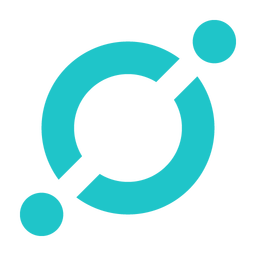

- IOTA
- ICON
- SOLVE
ICON

A.
'BTP 워킹 그룹' 출범
: 아이콘 재단은 자사가 개발한 인터체인 기술인 '블록체인 전송 프로토콜'을 토대로 싱가폴의 아이콘다오, 영국의 웹쓰리랩스, 미국의 엣지웨어 등 다국적 블록체인 기업과 함께 'BTP 워킹 그룹'을 발족했다.
BTP란 아이콘 재단이 연구한 기술로서 서로 다른 블록체인을 연결해 상호 운용성을 높이는 프로토콜이다. 이는 서로 다른 블록체인 간에 중간자 없이 토큰을 주고 받을 수 있도록 지원한다. 또 아이콘 토큰 보유자는 BTP로 연결되는 다른 블록체인 프로젝트의 토큰을 상대적으로 저렴하게 구매할 수 있게 된다.